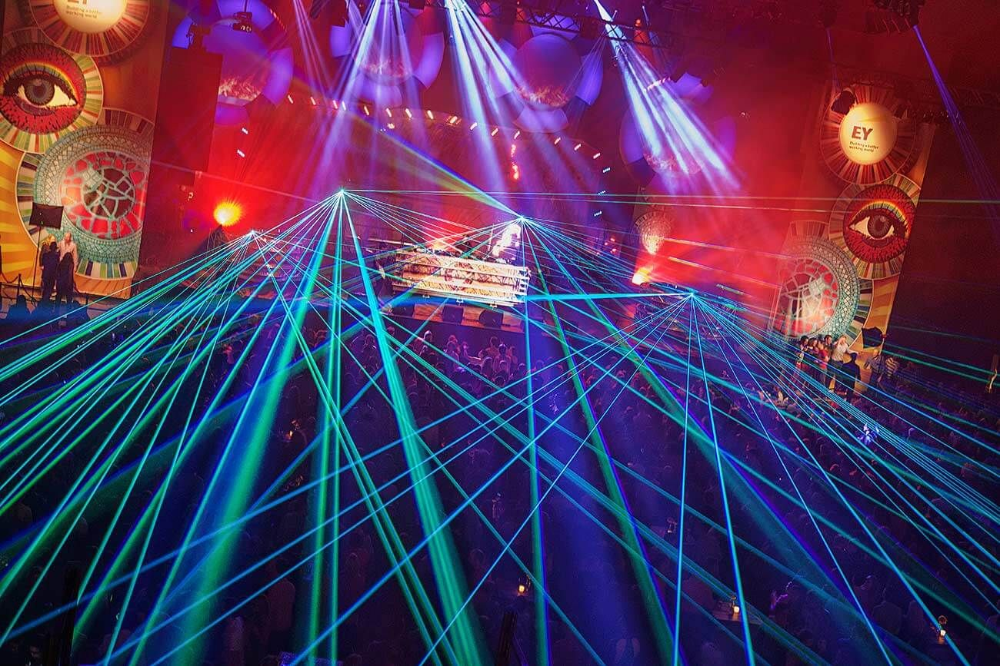
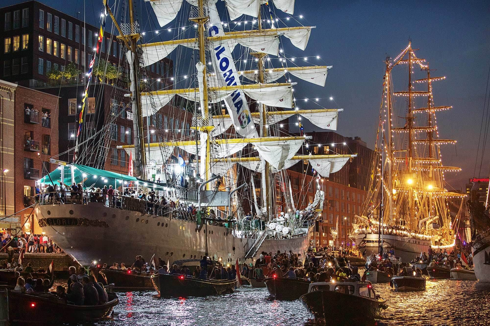
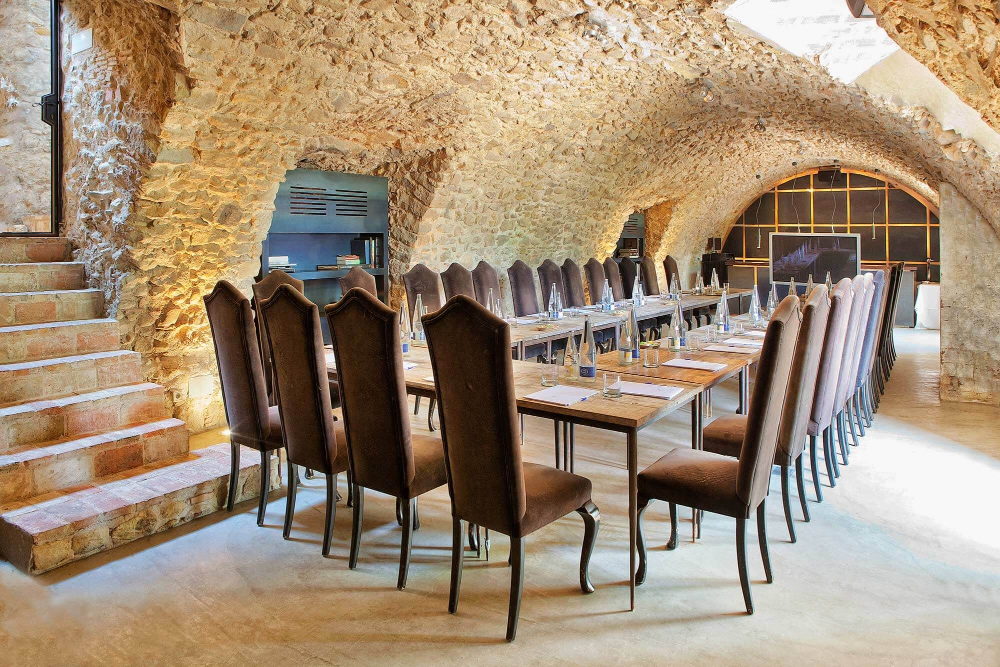
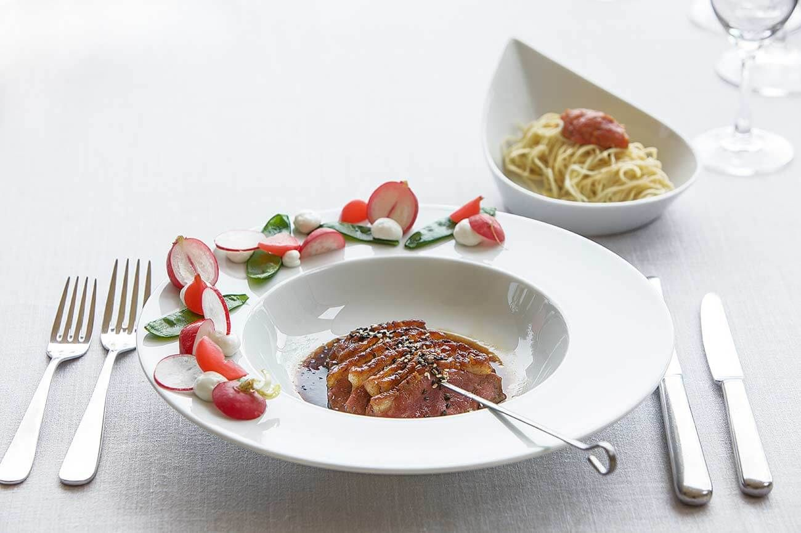

17:30
Ontvangst
De gasten komen binnen. Wil je meer, dan zet Robert een mobiele fotostudio neer op je event, voor profiel- of groepsfoto's die gasten meteen meenemen.

Robert Aarts, fotograaf in Breda. Evenementen, hospitality en bedrijven, in Nederland en ver daarbuiten.
5,0 op Google · 25 reviews
Een event heb je maar één keer. Robert werkt vanuit het draaiboek en houdt het overzicht, van de ontvangst tot de levering de volgende ochtend. Loop de avond door.
Een voorbeeldavond. Elk draaiboek is anders. Tik een moment aan, sleep over de lijn of gebruik de pijltjestoetsen.
De gasten komen binnen. Wil je meer, dan zet Robert een mobiele fotostudio neer op je event, voor profiel- of groepsfoto's die gasten meteen meenemen.
De spreker vastleggen zonder te storen. Robert kent het draaiboek en houdt het overzicht.
Een donkere ruimte, en toch geen flits. Robert fotografeert het diner zonder flitslicht.
Hoog tempo, niets in scène gezet. Er is één kans en die mag je niet missen. Daar komt zijn ervaring uit de concertfotografie van pas.

Snel geleverd, zodat persberichten en social media op tijd beeld hebben. Je krijgt een webgalerie, en als je wilt een fotoalbum, boek of fotocollage als relatiegeschenk.
Iemand die zegt dat hij alles kan, kan waarschijnlijk niets.

Op boekingssites kiezen gasten op de eerste drie foto's. Bij Robert staan verticale lijnen recht en zie je detail in de diepste schaduwen en de felste lichten.
Voor incentivereizen gaat Robert mee, ook ver weg.
Zijn uitrusting is compact en hij kan dagen achter elkaar fotograferen zonder computer of stroom. Door zijn open karakter ontspannen groepen voor de camera. De foto's laten het effect van de reis langer doorwerken.
Robert is geboren in 1970 in Oisterwijk. Hij ging naar het Grafisch Lyceum en daarna naar de Kunstacademie St. Joost.
Zijn vader leerde hem kijken naar het licht door de bomen, tijdens het fietsen door Brabant. Robert is een verhalenverteller met oog voor detail.
Je moet het willen zien en het op waarde weten te schatten.Robert Aarts

Een moderne studio van ruim 100 m², op zo'n 300 meter van Breda CS. Voor productfoto's en zakelijke portretten.
Vertel wat je organiseert en wanneer. Bel Robert, of mail je opdracht.